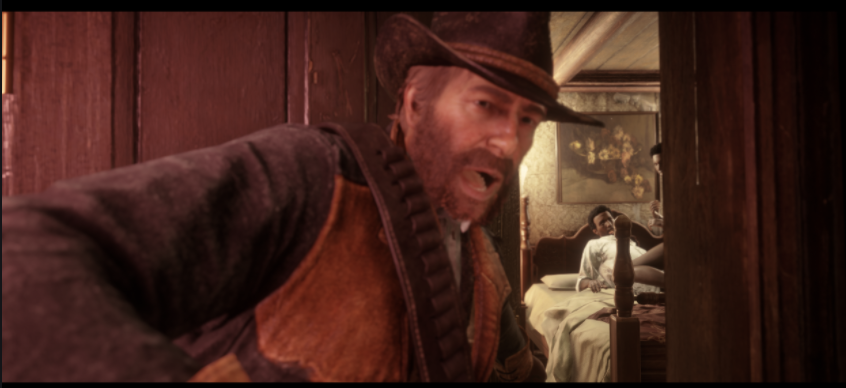

Dead Redemptiom 2 Review

Red Dead Redemption 2 was the most cinematic game I have played. The game takes place in america during the lawless time in america, during the wild west. I just completed it recently and it was easily the most fun game I have played in a while. This game had so much detail in it its incredible. The charecters actually felt like they lived in the world, and your actions felt like they had meaning and consequences to them.
The open world enviornment is sometimes more realistic than real life, looking through the trees and having the god rays come through, its breathtaking. And the way your character interacts with the environment is amazing as well, its unlike any other game I have played.
In Red Dead Redemptiom 2 you play as Arthur Morgan, who is a member of the van der linde gang. The Van Der Linde Gang is made up of the most random of people, but thats what makes the special, they treat everyone like family.
Theres the leader of the gang, Dutch. Dutch is who everyone respects, because he either saved them from death or helped them out in a life changing way. Arthur was saved by dutch as a kid, and he raised aurthur like he was his own. Then theres Hosea, hes the co-founder of the gang, hes the oldest in the gang and the wisest.
Theres also John Marshton. Hes arthurs good friend and another of the groups most trustworthy. Then theres Leopold Strauss, the gangs accountant. He gives Arthur quests to go retrieve debts from people who have not payed the group back. Theres so much characters in the gang alone itd take forever to talk about everyone in the game.
The gameplay is very entertaining, think of GTA but with horses and in america at the beginning, just as the federal government was forming. You live the life of arthur morgan trying to survive with the gang, but they have a large death bounty on the entire gangs head. The story is amazing.
Arthur Dutch and Hosea are constantly trying to stay ahead of the government, trying to move the gang somewhere safe. But they are constantly under attack or put in danger. Its a very relaxing and entertaining story.
Red Dead Redemption 2's open world is unrivaled in open world mechanics. While your just traversing the world you can find random people on the side of the road. These random encounters could be anything, from a blind old man asking for a dollar, to a fake blind old man asking for a dollar and then revealing himself to not be blind and then tries to rob you. Sometimes you will find people stranded on the road needing a ride back to town, sometimes you might find a crazy guy shouting at you challanging him to a duel.
Theres so many random encounters itd take forever to list them, its best to experience them on your own. Riding a horse in red dead also just feels normal. Its hard to describe but its nothing like driving a car in gta, imagine you get into your car and you press one button and your speeding off into the sunset, thats red dead driving.
Theres one Mission in Red Dead Redemtption 2 that cemented it as my favorite open world game to date. The missions name is called "A Quiet Place",
This mission starts off with one of your gang members, Lenny, coming back from a town, he tells the gang that another member has been arrested. Arthur is not happy, but dutch does not care. Lenny looks real upset, and dutch suggest you take lenny out to a saloon to take his mind off it. What happens next is the best scene in any video game I have ever seen.
Arthur and Lenny sit down, and order a few drinks. Within a minute the music changes to the most slow dancin', rootin'tootin, western song I have ever heard, all the while you and Lenny get lost in the night.
For the next several minutes you and lenny have an amazing time, at one point you loose track of lenny, and go around asking people if their lenny. The catch is every character model has lennys face until you ask them if their lenny. Its easily the most funny mission in any game I have ever played.